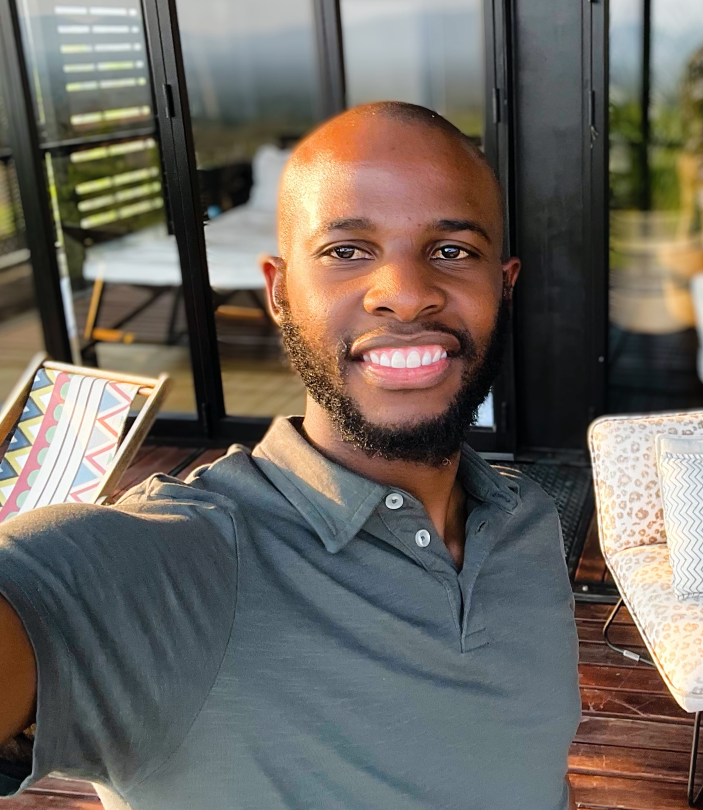
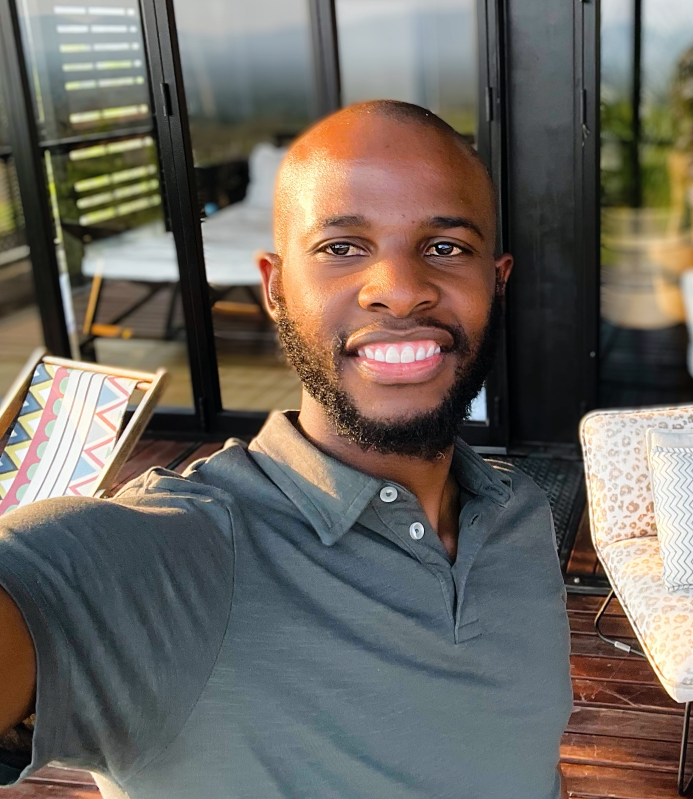

Contact Information
Olebogeng Segoe
Contact number: 076 434 8369
Email: segoeolebogeng@gmail.com
LinkedIn: Olebogeng Segoe
Olebogeng Segoe
Contact number: 076 434 8369
Email: segoeolebogeng@gmail.com
LinkedIn: Olebogeng Segoe
My name is Olebogeng Aron Segoe, I am originally from Rustenburg, Phokeng. My family clan is the
Bakgomong. "Kgomo e ntsho ntsho e esenang mebala."
That means a pitch-black cattle that does not have or tinted by any other color but black
throught.
By profession I am a GCC certified Mechanical Engineer currently working as a Maintenance Superintendent
at the Glencore FerroChrome Smelter Plant.
I have 8 years of experience working for Glencore in maintenance of Plant machinery. I have also worked for Eskom Research, Testing and Development team for a period of almost two years.
I have a passion in a couple of things that I love doing during my spare time. High End Real Estate Videography. I love creating real estate reviews of high end luxury homes. This endevour pushed me to develop even more skills that I never thought I'd enjoy doing. I have developed presentation skills, video editing skills and videography as an art. Musician, Bassist at church. Music is a place where I find my moment of happiness when I am feeling low. Low frequency notes is what I am most passionate about. Music is not music without a low end note. I play as a bassist at my church every Sunday. My favorite music genre is gospel music. The lyrics behind the musical instruments is what makes me feel connected closer to God.
In 2017 I met a beautiful rose that my heart could not resist but fell inlove with. This rose I call, The Rose Of Sharon. It's the most beautiful rose in the whole world. This rose is currently my wife. She is my motivation in life.
Spending quality time with my family.
Degree: BTech Degree
Year: 2015
Matric: National Senior Certificate
Year: 2008
Company name: Glencore
Location: Rustenburg
Period: 01 November 2015- Current
Company name: Impala Platinum
Location: Rustenburg
Perion: 01 May 2015 - 30 October 2015
Company name: Eskom RT&D
Location: Germiston, Gauteng
Period: April 2012- December 2013